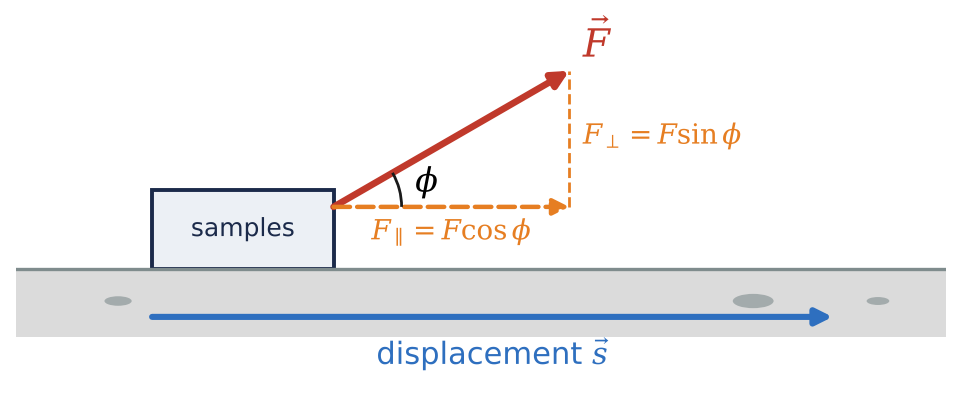
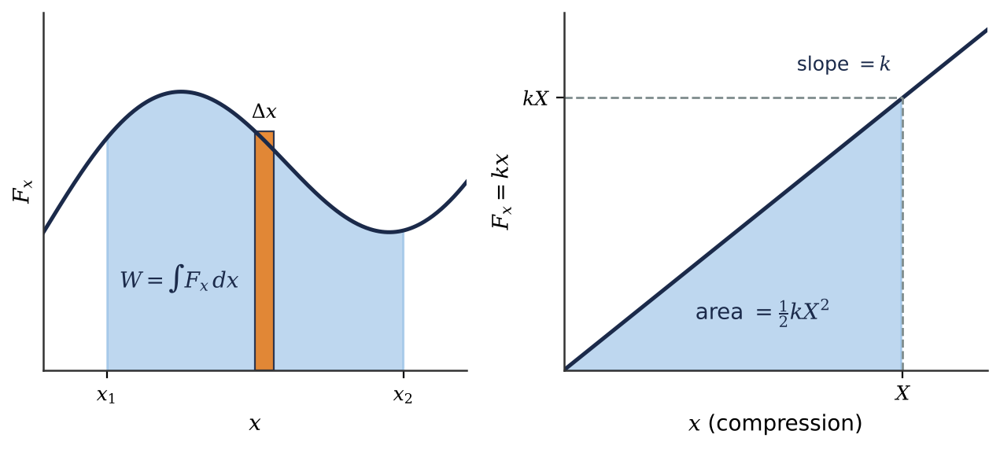
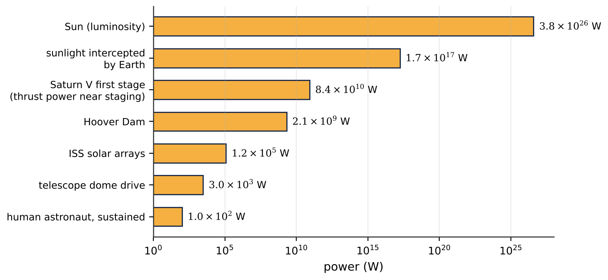

⚙️What you will learn
By the end of this module, you can:
- Calculate the work done by a constant force using \(W = Fs\cos\phi\) or the scalar product, and decide whether it is positive, negative or zero.
- Use the work-energy theorem \(W_\text{tot} = \Delta K\) to find speeds, stopping distances and braking forces for meteorites, landers and rovers.
- Find the work done by varying forces, such as springs and inverse-square gravity, as the area under a force-position graph or an integral.
- Compute average and instantaneous power, including \(P = \vec{F}\cdot\vec{v}\), and compare powers from humans to stars.
6.1Work
In physics, work has a precise meaning. If a constant force \(\vec{F}\) acts on an object while it moves through a straight displacement \(\vec{s}\), and \(\phi\) is the angle between them, the work done by the force is \(W = Fs\cos\phi\). Only the force component along the displacement counts: an astronaut pulling a lunar sample sled with a rope tilted upward does work only with the horizontal part of her pull.
Work is a scalar measured in joules (1 J = 1 N·m). Its sign matters:
- \(\phi < 90^\circ\): positive work, the force helps the motion;
- \(\phi = 90^\circ\): zero work, however large the force;
- \(\phi > 90^\circ\): negative work, the force resists the motion.
Because \(W = Fs\cos\phi\) is a scalar product, \(W = \vec{F}\cdot\vec{s} = F_xs_x + F_ys_y + F_zs_z\), which is handy when vectors are given in components.
A beautiful astronomical case: on a circular orbit gravity is always perpendicular to the motion, so it does no work. On an elliptical orbit gravity does negative work on the way out and positive work on the way in, which is why planets move fastest at perihelion.
When several forces act, the total work is the algebraic sum of their works (equal to the work of the net force). Note that holding a heavy camera still does no work on it, since its displacement is zero.

6.2Kinetic Energy and the Work-Energy Theorem
Combining Newton's second law with constant-acceleration kinematics gives \(Fs = \tfrac12 mv_2^2 - \tfrac12 mv_1^2\). The quantity \(K = \tfrac12 mv^2\) is the kinetic energy, and the result is the work-energy theorem: the total work done on a particle equals the change in its kinetic energy. It holds for any forces and any path (Section 6.3).
Positive total work speeds an object up, negative total work slows it down, and zero total work leaves its speed unchanged, which is why a satellite on a circular orbit keeps constant speed. Kinetic energy is never negative and is measured in joules.
Kinetic energy in the cosmos. \(K\) grows as \(v^2\), and solar-system speeds are large: anything falling to Earth from space arrives at 11 km/s or more. One kilogram of rock at 20 km/s carries \(2\times10^8\) J, about fifty times the chemical energy of a kilogram of TNT. Since mass grows as diameter cubed, impact energy rises steeply with asteroid size, the reason for planetary-defense missions like DART.
The theorem is ideal for braking problems: given two speeds and a distance, find the force, without ever needing the time. For a descending lunar lander, gravity does positive work and the upward thrust does negative work; their sum equals \(\Delta K\). Finally, \(K\) depends on the reference frame, so measure work and kinetic energy in the same inertial frame.
6.3Work and Energy with Varying Forces
Real forces often change with position. Divide the motion into tiny steps, treat the force as constant on each, and add: the work is the area under the graph of \(F_x\) versus \(x\), i.e. an integral. Areas below the axis count as negative work.
Springs. To stretch or compress an ideal spring by \(x\) you must exert \(F_x = kx\) (Hooke's law), where \(k\) is the force constant in N/m. The work to compress it by \(X\) is the triangle area \(\tfrac12 kX^2\); the spring does the negative of this on whatever presses it. Docking capture rings, landing-leg shock absorbers and CubeSat separation springs all use this idea. A docking ring removes a capsule's relative kinetic energy smoothly; since the force grows with compression, the first half of the stroke removes only a quarter of the energy.
Gravity far from a planet. For a rocket climbing thousands of kilometers, gravity \(GMm/r^2\) weakens with distance, so the work done by gravity from \(r_1\) to \(r_2\) is \(GMm(1/r_2 - 1/r_1)\), negative for outward motion. The constant-force estimate \(-mgh\) overstates it for large climbs.
Curved paths. In general \(W = \int \vec{F}\cdot d\vec{l}\), a line integral. Only the tangential force component does work; applying Newton's second law to it proves that \(W_\text{tot} = \Delta K\) holds for any force and any path in three dimensions.

6.4Power
Power is the rate at which work is done. The average power over an interval is \(P_\text{av} = \Delta W/\Delta t\); the instantaneous power is \(P = dW/dt\). The SI unit is the watt, 1 W = 1 J/s. Do not confuse power with energy: the kilowatt-hour is an energy unit, \(1\ \text{kW·h} = 3.6\times10^6\ \text{J}\). The work done over a time interval is the area under a power-time graph.
For a force acting on a moving object, \(P = \vec{F}\cdot\vec{v} = Fv\cos\phi\). This explains a lot about rockets: a constant thrust delivers no power to a rocket sitting on the pad (\(v = 0\)), but enormous power near the end of the burn, when the vehicle is fast. It also explains why a telescope dome needs only modest motors: the friction force is large, but the rim moves slowly, so \(Fv\) is just a few kilowatts.
Powers in nature span a huge range: about 100 W for an astronaut on a spacewalk, about 120 kW from the ISS solar arrays, \(1.7\times10^{17}\) W of sunlight intercepted by Earth, and \(3.83\times10^{26}\) W radiated by the Sun, the solar luminosity \(L_\odot\). A star's luminosity is simply its radiated power. If a machine has an efficiency below 100%, its input power is the output power divided by the efficiency.

★Key takeaways
- Work by a constant force is \(W = Fs\cos\phi = \vec{F}\cdot\vec{s}\); it is positive, zero or negative depending on whether the force helps, ignores or opposes the motion.
- Kinetic energy \(K = \tfrac12 mv^2\) is never negative; the work-energy theorem \(W_\text{tot} = \Delta K\) links forces and distances directly to speeds.
- Gravity does no work on a circular orbit, so the speed stays constant; on an ellipse it slows the body going out and speeds it up coming in.
- For varying forces, work is the area under the force-position graph: \(\tfrac12 kX^2\) for a spring and \(GMm(1/r_2 - 1/r_1)\) for gravity far from a planet.
- Power is the rate of doing work, \(P = dW/dt = \vec{F}\cdot\vec{v}\); a star's luminosity is its power output, \(L_\odot = 3.83\times10^{26}\) W for the Sun.
⟡Worked examples
Each example follows the book's method: Identify and set up, Execute, Evaluate.
An astronaut drags a sled of lunar samples 25.0 m across level ground, pulling on a rope with a constant 45.0 N force directed 30.0\(^\circ\) above the horizontal. A 30.0 N kinetic friction force opposes the motion. The sled and samples have mass 75.0 kg, and \(g_\text{Moon} = 1.62\ \text{m/s}^2\). Find the work done on the sled by (a) the rope, (b) friction, (c) lunar gravity and the normal force, and (d) the total work.
Show solution (try it first)
Identify and set up: All forces are constant and the displacement is a straight horizontal line, \(s = 25.0\) m, so \(W = Fs\cos\phi\) applies to each. Angles: rope \(30.0^\circ\), friction \(180^\circ\), gravity and normal force \(90^\circ\).
Execute: (a) \(W_T = (45.0\ \text{N})(25.0\ \text{m})\cos 30.0^\circ = 974\ \text{J}\).
(b) \(W_f = (30.0\ \text{N})(25.0\ \text{m})\cos 180^\circ = -750\ \text{J}\).
(c) Gravity (121.5 N) and the normal force (99.0 N) are perpendicular to the displacement, so \(W_g = W_n = 0\).
(d) \(W_\text{tot} = 974\ \text{J} - 750\ \text{J} + 0 + 0 = 224\ \text{J}\).
Evaluate: The rope helps (positive work), friction resists (negative work), the vertical forces do nothing. The positive total work means the sled speeds up. The vertical part of the pull still matters indirectly: it reduces the normal force and hence the friction.
A 15,000 kg lunar lander descends vertically at 12.0 m/s when it is 60.0 m above the surface. A constant upward engine thrust slows it to 1.0 m/s at touchdown. Lunar gravity is \(1.62\ \text{m/s}^2\); ignore the mass of fuel burned. (a) What is the change in kinetic energy? (b) What thrust is required? (c) How much work do gravity and thrust each do?
Show solution (try it first)
Identify and set up: Two speeds and a distance are known and a force is wanted: use the work-energy theorem. Take the downward displacement \(s = 60.0\) m. Gravity \(mg = 2.43\times10^4\) N does positive work \(mgs\); the upward thrust does negative work \(-Ts\).
Execute: (a) \[\Delta K = \tfrac12(15{,}000\ \text{kg})\left[(1.0\ \text{m/s})^2 - (12.0\ \text{m/s})^2\right] = -1.07\times10^6\ \text{J}\]
(b) From \(mgs - Ts = \Delta K\): \[T = mg - \frac{\Delta K}{s} = 2.43\times10^4\ \text{N} + \frac{1.0725\times10^6\ \text{J}}{60.0\ \text{m}} = 4.22\times10^4\ \text{N}\]
(c) \(W_g = mgs = 1.46\times10^6\) J and \(W_T = -Ts = -2.53\times10^6\) J.
Evaluate: \(W_g + W_T = -1.07\times10^6\) J, matching \(\Delta K\). The thrust is about 1.7 times the lander's lunar weight, as it must exceed the weight to decelerate a descending craft. We never needed the burn time.
A 12,000 kg crew capsule approaches a space station at a relative speed of 0.100 m/s. Its docking ring acts like an ideal spring and must stop the capsule (relative to the station) within a compression of 0.200 m. (a) What force constant \(k\) is needed? (b) What is the maximum force on the capsule? (c) What is the relative speed when the ring has compressed 0.100 m?
Show solution (try it first)
Identify and set up: Work in the station's frame. The spring force \(-kx\) varies with compression, and the work it does on the capsule from 0 to \(x\) is \(-\tfrac12 kx^2\). The work-energy theorem links \(k\) to the kinetic energy.
Execute: (a) \(K_1 = \tfrac12(12{,}000\ \text{kg})(0.100\ \text{m/s})^2 = 60.0\ \text{J}\). For a stop at \(X = 0.200\) m, \(-\tfrac12 kX^2 = 0 - K_1\), so \[k = \frac{2K_1}{X^2} = \frac{2(60.0\ \text{J})}{(0.200\ \text{m})^2} = 3.00\times10^3\ \text{N/m}\]
(b) \(F_\text{max} = kX = (3.00\times10^3\ \text{N/m})(0.200\ \text{m}) = 600\ \text{N}\).
(c) At \(x = 0.100\) m the spring has done \(-15.0\) J, so \(K_2 = 45.0\) J and \(v_2 = \sqrt{2(45.0\ \text{J})/(12{,}000\ \text{kg})} = 0.0866\ \text{m/s}\).
Evaluate: Halfway through the stroke only a quarter of the kinetic energy is gone, because the spring force is weak at small compression. A 600 N peak force on a 12 tonne vehicle is a gentle 0.05 m/s\(^2\) deceleration, ideal for a crewed docking.
✍️Activity 6: The Energy of Motion
Answer each item using work, the work-energy theorem or power. Use \(g = 1.62\ \text{m/s}^2\) on the Moon and \(3.71\ \text{m/s}^2\) on Mars; for Earth use \(G = 6.674\times10^{-11}\ \text{N·m}^2/\text{kg}^2\), \(M_\oplus = 5.972\times10^{24}\) kg and \(R_\oplus = 6.371\times10^6\) m. Enter numeric answers as plain numbers in the unit requested (answers within 2% are accepted). Finish with the short reflection.
8 graded items, 1 point each, plus a short reflection. For each problem, write your solution in the solution box, then type the final answer as a plain number (keep 3 significant figures; small rounding differences are accepted). You may submit up to 2 times; every attempt is recorded. Right after submitting you will see your score and which items are correct or wrong; after your last attempt you will also see the correct answers.
Use these values unless an item gives its own: \(g_\text{Earth} = 9.80\ \text{m/s}^2\), \(g_\text{Moon} = 1.62\ \text{m/s}^2\), \(g_\text{Mars} = 3.71\ \text{m/s}^2\), \(G = 6.674\times10^{-11}\ \text{N·m}^2/\text{kg}^2\), \(M_\text{Earth} = 5.972\times10^{24}\ \text{kg}\), \(R_\text{Earth} = 6371\ \text{km}\).